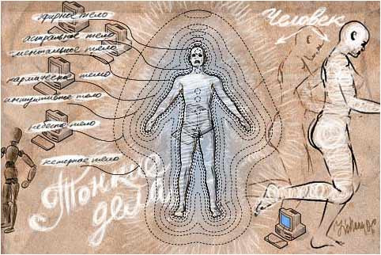
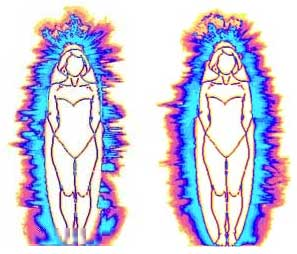

В разделе «Курьезы» мы уже писали о компьютерной чудо-диагностике, которая может заменить сразу все диагностические приборы и процедуры в клинике. Ещё один уникальный современный и высокотехнологичный способ диагностики — это метод Газоразрядной Визуализации, позволяющий не только диагностировать с высокой точностью все без исключения заболевания, но и оценить эффективность лечения и, при необходимости, откоррегировать назначенную терапию.
Не секрет, что в медицине широко используются электрографические методы, позволяющие проводить диагностику функционального состояния организма человека, устанавливая связь между его электрофизиологическими и клинико-анатомическими характеристиками. Электрическую активность органов и тканей изучают с помощью электроэнцефалограммы (ЭЭГ), электрокардиограммы (ЭКГ), электромиографии и т.п. Одним из перспективных электрографических методов исследования состояния человека является метод Газоразрядной Визуализации (ГРВ), основанный на эффекте Кирлиан («высокочастотное фотографирование»). Газоразрядная Визуализация (ГРВ) — это компьютерная регистрация и анализ свечений, индуцированных объектами, в том числе и биологическими, при стимуляции их электромагнитным полем с усилением в газовом разряде. На основе метода ГРВ группой учёных из Санкт-Петербурга разработан аппарат «ГРВ Камера».

На настоящий момент целый ряд фирм наладил производство (кстати, очень несложное) приборов для создания ГРВ-грамм — визуального изображения Вашей ауры. И одной из основных точек приложения этого метода стала диагностика болезней внутренних органов, в том числе инфекционных. Отныне, совершенно любой врач может пользоваться этими благами цивилизации. Потому что:
- «ГРВ-камера» — это уникальная возможность обследовать сразу весь организм и начать курс лечения, учитывая состояние каждого органа.
- «ГРВ-камера» — это высочайшая точность диагностики, компьютерный анализ данных, наглядный просмотр результатов.
- «ГРВ-камера» даёт возможность зарегистрировать заболевания на ранней стадии развития, в том числе и онкопатологию, определяет «слабое» место Вашего организма.
- «ГРВ-камера» видит паразитов, инфекцию и «шлаки» в органах, воспалительные и спаечные процессы, кисты, опухоли, процессы отложения солей, формирование камней.
- «ГРВ-камера» может рассматривать не только каждый орган отдельно, но и оценивать работу системы органов в целом, а также визуализировать психоэмоциональное состояние самого человека и его биоэнергетическую систему — «Ауру».
То есть практически это означает, что во время одного-единственного сеанса-консультации Вы получите полную информацию о своём здоровье и рекомендации по лечению на основании ГРВ-граммы. Безопасность, анонимность и прочие тонкости обеспечены. Достаточно приложить по очереди все 10 пальцев рук на специальную пластину. Разумеется, это исследование заменяет сотни, если не все существующие методы медицинских исследований, поскольку заглянуть так глубоко и сразу во все органы и системы до сих пор никто не смел. В принципе, дальнейшее развитие медицинской науки становиться бессмысленным, поскольку круче, чем диагностика инфекции по ауре, может быть только победа нашей футбольной сборной в чемпионате мира. Но особенно перспективным является коррекция и оценка эффективности проводимой терапии по свечению в ГРВ-камере, так как подобные мероприятия показаны большинству пациентов и такая работа принесёт большую пользу (и деньги…). Оказывается, аура меняется в зависимости от видов микроорганизмов, их количества. Излечился пациент от вируса или нет, будет хорошо видно по его ауре. Применение же в онкологии вообще трудно переоценить.
Однако, на лицо целый ряд недостатков метода. Во-первых, не у всех пациентов присутствуют все пальцы на руках, необходимо разработать запасной вариант с прикладыванием пупка или лба, той части, которая, скорее всего, будет в наличии у любого. Во-вторых, в описании методики нам не встретились стандартные правила обработки рук перед процедурой, согласитесь, что будет обидно, если жирное пятнышко на пальце приведёт к неверному диагнозу по ауре. В-третьих, очевидно, непрезентабельное название метода, нечитабельное сочетание трёх букв следует заменить на «аурографию», например, либо «ауромониторинг». С таким названием в кабинет ГРВ попадёт значительно больше клиентов.
Мы снова видим, как, пользуясь низкой медицинской культурой населения, отдельные организации и люди дискредитируют всю остальную медицинскую науку. Не жалко, что эти дельцы зарабатывают на народе. Но уж не лезьте, пожалуйста, в медицину. Предсказывайте будущее, снимайте порчу, вызывайте духов. Но не заявляйте о перевороте в науке на основании анализа известных физических явлений и, тем более, не трактуйте их так, как подскажет задняя левая нога.
Приложение: ГРВ-граммы до (рисунок 1) и после (рисунок 2) лечения

В.В. Привольнев